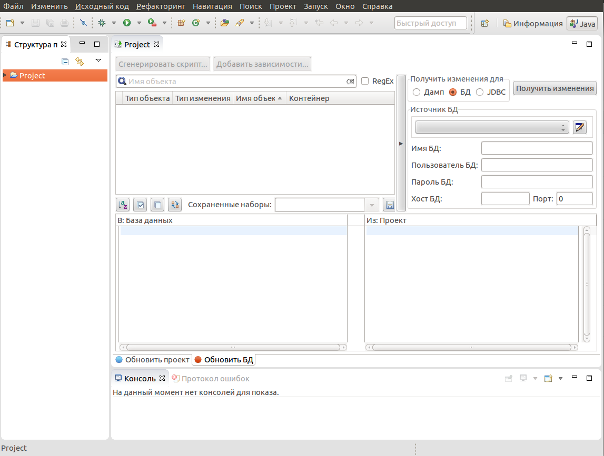

Плагин pgCodeKeeper предназначен для сравнения и создания скрипта наката одной PostgreSQL схемы на другую.
Перед началом работы рекомендуется зайти в Window - Preferences и выставить пути к исполняемому файлу pg_dump, если его нет в переменной окружения %PATH%.
После этого можно создать проект схемы.
Проект представляет собой дамп схемы БД, разобранный на отдельные объекты, хранимые в отдельных файлах в иерархической структуре. Данная структура также хранится в SVN репозитории проекта, что позволяет иметь предыдущие версии схемы и работать с ними как сторонними SVN тулзами (например Subclipse), так и из самой программы.
После создания проекта имеется возможность просмотреть структуру объектов-файлов, и создать скрипт наката (дифф) этой схемы на другую или наоборот.
